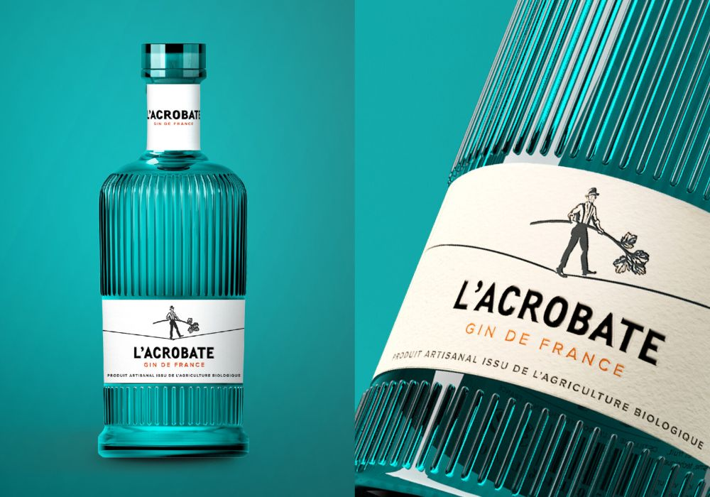
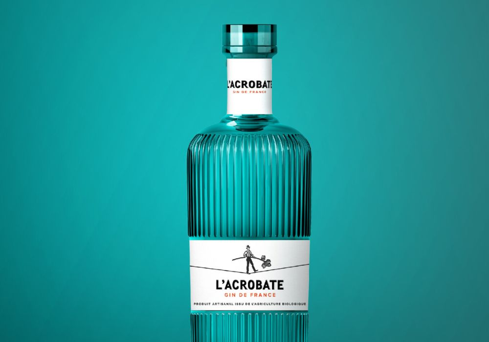

Contemporary · Organic · Spirulina-Infused · 44% alc./vol.


L'Acrobate Gin emerges as a testament to creative artistry and meticulous craftsmanship. Produced in the heart of France, this organic gin seamlessly blends tradition and modernity, offering a vibrant profile that captivates both connoisseurs and casual gin enthusiasts alike.
Distilled in small batches using 100% organic ingredients, the gin is a product of Les Bienheureux, a French company known for its commitment to sustainable practices and exceptional quality.
The gin's character is defined by an infusion of spirulina, a unique ingredient that imbues the spirit with a fresh, marine quality while enhancing its vibrant, emerald hue.
The sensory profile of L'Acrobate Gin strikes a delicate balance between exotic fruit notes and subtle botanicals. A harmonious fusion of technique and poetry.